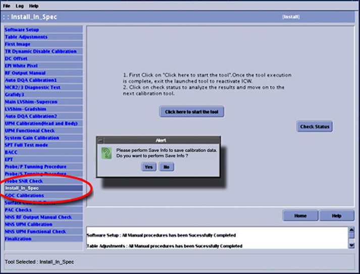

Proprietary to General Electric
Direction 5500113, Rev# 3
Module Version 23.0, Version Date 9/21/10
Proprietary to General Electric |
Insert the Service Key.
Launch the Service Browser.
Click the Tools icon.
Click the [Service Browser] button and then select [Start] to display the Common Service Desktop.
Click the Calibration tab.
If in either the Install or Maintenance mode, click [Install and Calibration Wizard] and the link: Click here to start this tool.
The ICW will launch the mode that corresponds to the system status: either Install or Maintenance mode. See appropriate section below for details.
Clicking the [Help] button in the lower right corner will open the service document for the active calibration step.
Ensure all options purchased by the customer are installed. A pop-up similar to the one shown in Illustration 1 will display summarizing the results. Review the status of these option keys, and confirm the correct configuration.
Click [Quit] if the site configuration is unknown or does not match the option key status.
If the configuration is correct, click [Continue].
Some calibrations have certain dependencies.
For the manual tasks, acknowledge the completion of each task listed by clicking the box next to it, then clicking [Submit].
For those tools (calibrations) with machine data, click the link: Click here to start this tool. When the tool interface displays, follow the links (available in Calibrations) for specific instructions on setting up and running a particular tool.
When the calibration is completed or aborted, close the tool by clicking [-] in the upper left corner, then clicking [Exit].
Click [Check Status]. This will register the tool’s pass/fail status. If the tool passes, the next calibration in the flow will become active. If the tool fails or was incomplete, the tool will turn red and the user will be unable to continue until that calibration passes.
The ICW will remain in Install mode until every task listed on the left side (shown in Illustration 3) is successfully completed. After completing all tasks in Install mode, exit the ICW. (The next time the Install and Calibration Wizard is launched, it will open in Maintenance mode.)
Relaunching Machine Data Calibrations:
Tool Failures:
Each numbered procedure in this section represents an ICW screen. The items below each procedure indicate the checklist or calibration that needs to be performed. Each ICW screen is linked to the appropriate documentation and system calibration or test required (if the service documents are loaded), eliminating the need for documentation on each individual ICW screen.
Power-On Sequencing: Power On Sequencing
Software Setup
Load Host System Software: Loading Host System Software
Load Latest Service Pack (if any): Installing Software Updates
Load Service Documentation: Installing Service Methods CD onto System
DVD Archive Functional Check: Save and Restore Tool
Insite Checkout: InSite/IIP
Reboot System: System Startup and Shutdown
Dock Adjustments: Dock Adjustments
Dock Centering
Dock Hook Tension Adjustment
Magnet Ramp/Shim - See the applicable Magnet and Cryogens Subsystem Manual for the specific procedures listed below.
Magnet Pre-Ramp Requirements: Ramping Procedure
Magnet Rundown Unit - Functional Check: Magnet Rundown Unit (MRU) Checks
Magnet Ramp: Ramping Procedure
Magnet Shim Prerequisites Complete: Shim Current Adjustment
Initial Shim Current Adjustment: Shim Current Adjustment
Passive Shim: Passive Shimming for MR450
Table Adjustments
| NOTE: | All adjustments are iterative. If one adjustment is made, it may be necessary to confirm that other adjustments have not been compromised. |
Safety Check: Cradle Home Table Down Interlock Adjustment
(For Systems with multiple tables) Dual Table Alignment
Peripherals Setup
Fill Chiller and Lines with Coolant: HEC Coolant Fill and Coolant Leak Check
Coolant Leaks Checks Complete: HEC Coolant Fill and Coolant Leak Check
Body Coil Air Flow Functional Checks: Body Coil Air Flow Functional Check
Laser Light Alignment: Laser Light Alignment
In Room Display
TR Dynamic Disable Calibration: TR Dynamic Disable Calibration
RF Manual Output Check
Body RF Power Output Calibration: Body and Head Maximum Power Setup and Calibration
Head RF Power Output Calibration: Body and Head Maximum Power Setup and Calibration
Universal Power Monitor (UPM) Calibration
UPM Body Setup and Calibration: UPM - Head and Body Setup and Calibration
UPM Head Setup and Calibration: UPM - Head and Body Setup and Calibration
Coil Datapath Diagnostic: Coil Datapath Diagnostic (CDD)
Gradient Fidelity Diagnostic: Gradient Fidelity Diagnostic
Forward / Reverse Quadrature Check: Forward / Reverse Quadrature Check
Image Orientation / DQA II: DQA II Tool and Troubleshooting
EPI White Pixel Test: EPI White Pixel PM Mode.
LVShim Rough - Rough Shim Spec, Rough: LV Shim Procedures
LVShim Gradshim - Customer Acceptance, Gradshim: LVShim Procedures
Grafidy3: Grafidy 3 Eddy Current Calibration
LVShim Main - Shim To Spec, Supercon: LVShim Procedures
Gradient / Iso Vector Z Calibration (DQA II Tool): DQA II Tool and Troubleshooting
Higher Order Shim Calibration (HO Shim Config Only): HOShim Cal Ref Map Creation Procedures and Verification
Higher Order Shim Functional Check (HO Shim Config Only): High Order Shim Functional Check
System Gain Calibration (Head and Body): System Gain Calibration
System Performance Test (SPT): SPT Check and Troubleshooting For XRMB/XRMw
Echo Planar Test: Echo Planar Test (EPT)
Probe/P Tuning Procedure (Probe Option Key Only): Probe/SV Calibration and SNR Tests
Probe/S Tuning Procedure (Probe Option Key Only): Probe/SV Calibration and SNR Tests
Probe SNR Check
Probe-P SNR (Probe Option Key Only): Manual Entry Probe/SV SNR Protocols
Probe-S SNR (Probe Option Key Only): Manual Entry Probe/SV SNR Protocols
GOC Calibrations
Intercom Adjustments: Intercom Adjustment for GOC Audio Box
PACS, HIS/RIS, Camera, Site Specific Networking
Pneumatic Patient Alert Check
PAC Checks: ICW PAC Checks
Peripheral Pulse Probe Check
ECG Leads Checks
Respiratory Compensation Checks
Finalization: ICW - Finalization
Magnet Pressure Control - Functional Check
Magnet Monitor Checked Out with OLC
Planned Maintenance Initialization
SaveInfo
Product Locator Data Entered into GIB
Install in Spec (Generating the System in Spec (IIS) Authentication Key) - ICW - Install in Spec
If the Installation and Calibration Wizard was followed, the Install in Spec key generation will become available after all the system calibrations and test scans are completed in the wizard. The table below shows the various parameters that the Install in Spec process evaluates and the passing criteria for each parameter.
Table 1: Install In Spec Criteria
| Test | Subtests | Satisfactory Test - Extra Results |
|---|---|---|
| DQA II | Z-Isocenter | Passing |
| Gradcal | Passing | |
| SPT | Head and Body SNR | Passing |
| Head and Body Stability | Passing | |
| Coherent Noise | Passing | |
| Eddy Current x, y, z | Passing | |
| EPT | Head and Body White Pixel | Passing |
| Head and Body B0 Image | Passing (less than 8%) | |
| LVShim (See Note 1 below.) | Inhomogeneity (Whole Body) | See specification within tool. |
| System Gain | Successful execution of System Gain | |
| TR/DD Calibration | Driver Control Board Calibration | Successful execution of Driver Control Board calibration |
| UPM | UPM Calibration File | Passing |
| System Health Information in 3rd quadrant of Home page on MR Service Desktop browser. | Config File Checks | Passing |
| Coil Database File Checks | ||
| Probe Calibrations | Probe Calibration file Checks | Passing - Only checked if site has purchased Probe-P and Probe-S option keys. |
| Note
1: IIS always analyzes the last LVShim file created. Make sure this file was created with the Shim Type (menu selection 1) and the LVShim Analysis program set to Test mode. This mode uses the customer acceptance specification values needed for IIS to correctly analyze the LVShim file results. | ||
Locate the Install_In_Spec tool, about 3/4 of the way down the ICW calibration list (shown below), and select [Click here to start the tool].
Illustration 6: Install In Spec

Click [Check Status].
Correct all failures as necessary, and repeat this procedure until Install in Spec passes.
Return to the ICW, and advance to the remaining calibration procedures that must be completed prior to turning the system over to the customer.
After all steps are successfully completed in Install mode, the next time the ICW is launched, it will be in Maintenance mode. In Maintenance mode, no calibration order is enforced. If a selected calibration is affected by or affects any other calibration, a pop-up message displays and affected calibrations display in bold. (See the illustration below.)
Illustration 7: Starting Maintenance Mode

Click [Yes] to acknowledge the Pre and Post Dependencies. All pre-dependencies are unbolded, and the selected tool becomes active.
Perform all necessary setup prior to launching the tool. (See the illustration below for instructions on how to start calibrations in the Maintenance mode.)
When [Check Status] is clicked, one final pop-up message alerts the user to the post dependencies.
Clicking [Acknowledge] will unbold the post dependencies.
Clicking [More] will display the Dependency matrix used to determine the pre and post dependencies. (See Illustration 2.)
To exit from the ICW, select Quit from the File menu.
When the pop-up box shown below displays:
Illustration 9: Exiting ICW

Click [Yes] to go to Guided Install and perform a SaveInfo.
Click [No] to remain in the ICW.
Click [Exit] to exit from the ICW without performing a SaveInfo.